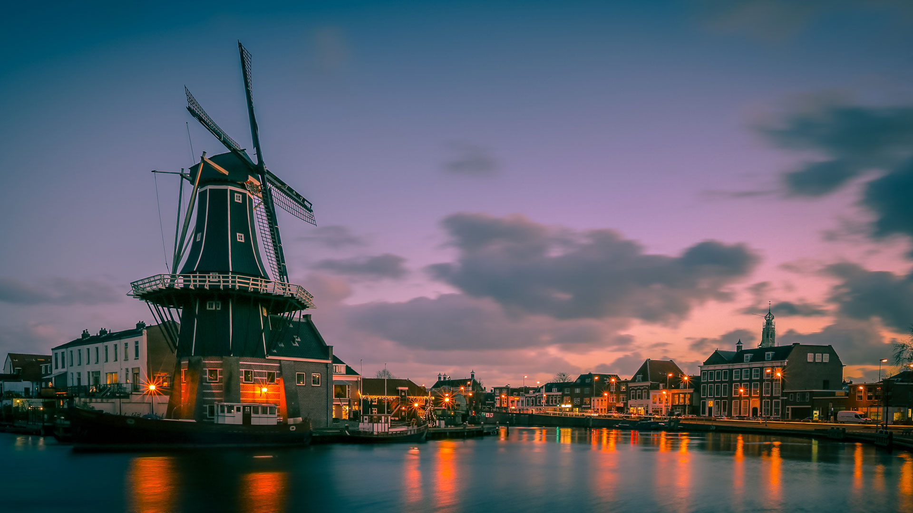
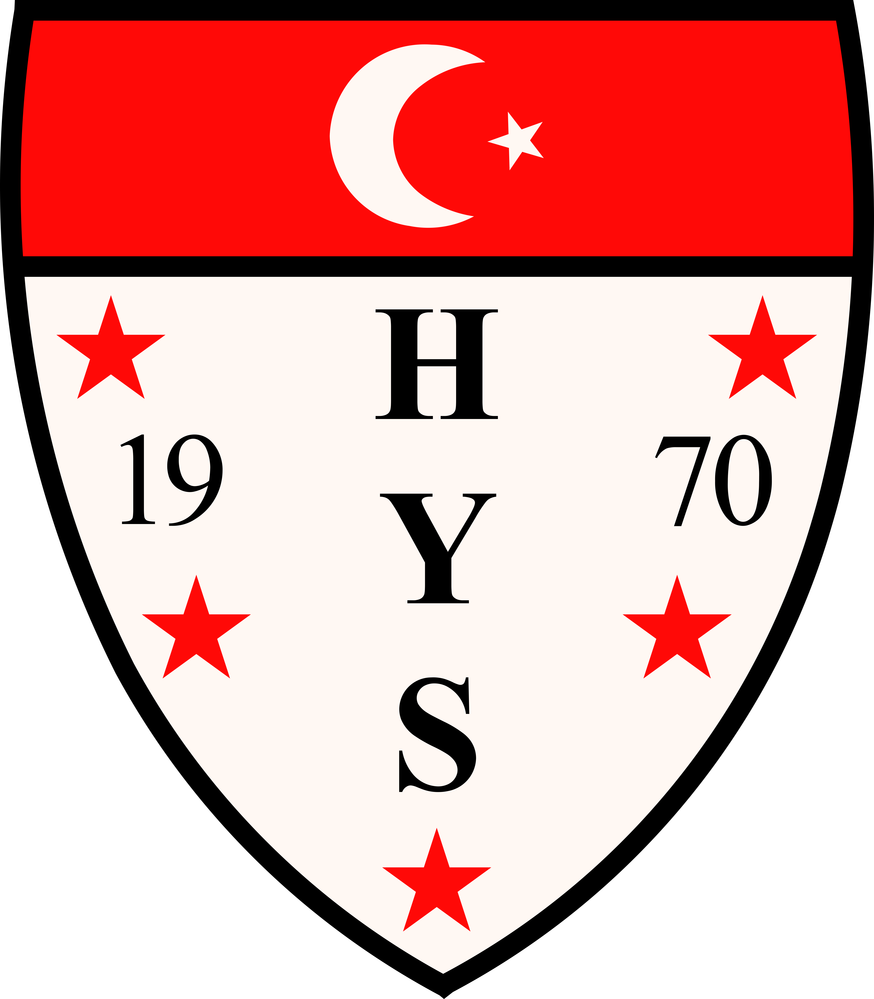
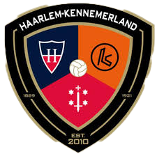
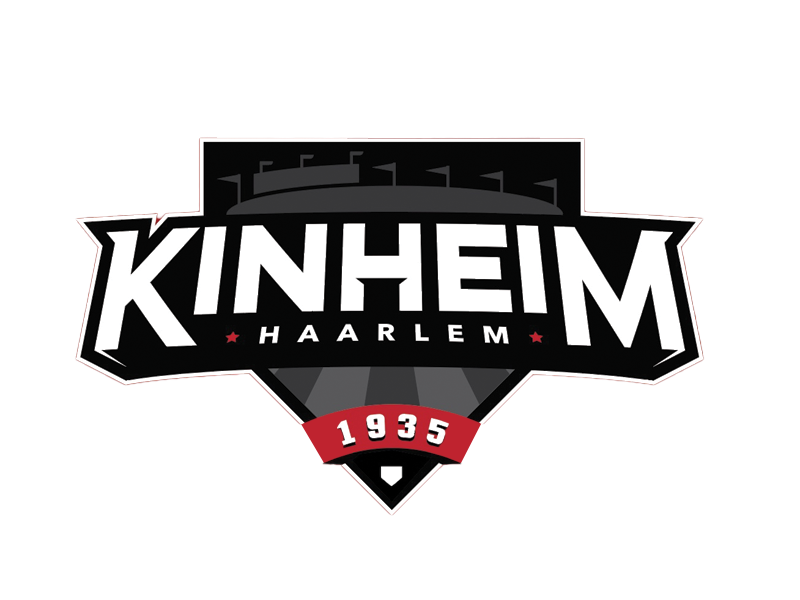
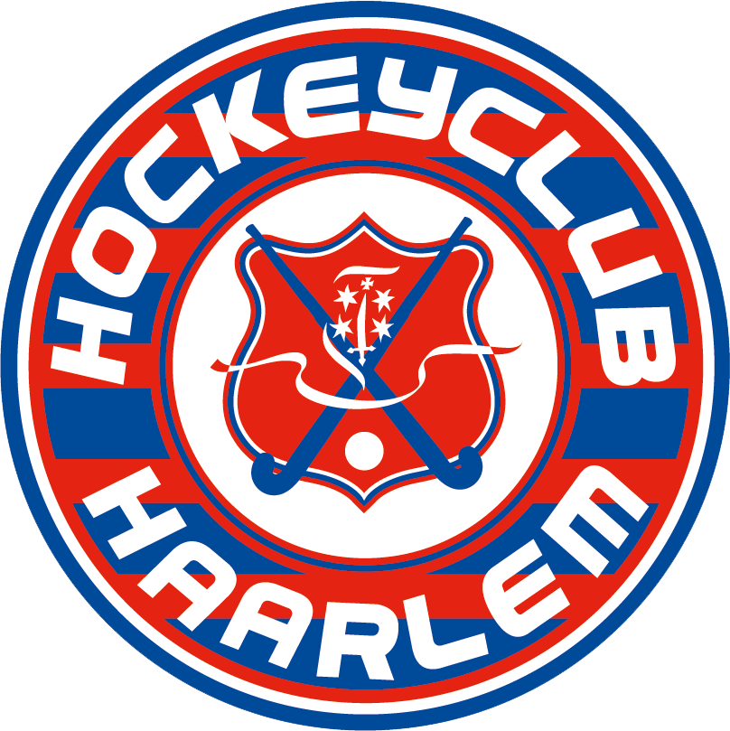
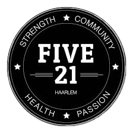
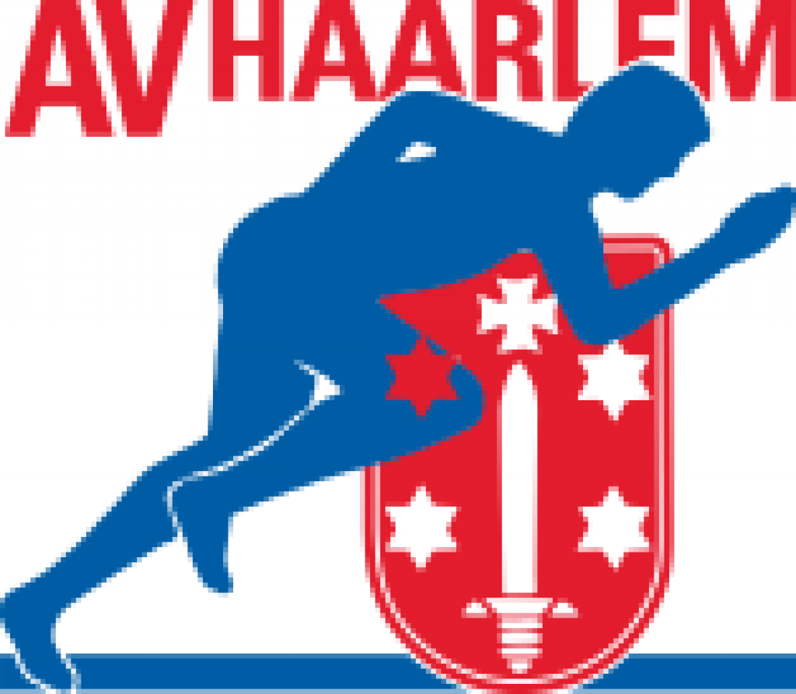

Haarlem is the capital of the province of Noord-Holland. Haarlem is a historic city with its city rights being given even earlier from Amsterdam on 1245. Located on the river Spaarne, Haarlem has the nickname of "Spaaarnestad". The city lies very close to the Dutch coast and the dunes, where you can have some lovely walks, even in the winter period.
-
Munen Muso
We are a sports club that specializes in Japanese martial arts. Munen Muso means: without thought, without intention, a concept from the Zen and budo philosophy that only starts to become clear after many hours of training.
-
Haarlem Yildiz Spor
Haarlem Yildiz Spor (HYS) was founded on March 5, 1970 as the first amateur football club founded by the first generation of Turkish guest workers. The home games are played at the Sportpark Reinaldapark in Haarlem. The first Sunday team plays in the fifth class. Since the 2017-2018 season, HYS is also active in the Saturday division, during which it was promoted from the fourth to the third class during the debut season, in which it is currently active.
-
Haarlem-Kennemerland
Haarlem-Kennemerland Football Club is a young and thriving football club, founded in 2010. We play football on the old Haarlem complex on the Sportweg. We think it is important to deliver good sporting performance, but more important that we are a well-kept and committed association, where every member enjoys playing football.
-
Kinheim
Kinheim wants to be the close-knit and social baseball and softball club where top sport and recreational sport reinforce each other. And as an association full of ideas, initiatives and sporting ambition, we needed a plan to bring things together and start working structurally on achieving our goals. This is the reason that we have made a Policy Plan 2020.
-
H.C Haarlem
We have three artificial grass hockey pitches. Our main field (right in front of the clubhouse) is a water artificial grass field. This field has been there since September 2016. The other two fields are sand-strewn artificial grass pitches. The artificial grass field of the korfball club is also lined as a hockey field.
-
FIVE21
Team Five21 is committed to the continuous physical and mental development of every athlete and coach by offering high-quality lessons and a community-oriented policy. TeamFive21 was created after 6 sporty friends who regularly crossFit together came up with the idea to set up their own gym. Among other things, they share the same passion for CrossFit, for fun and for pleasure in life.
-
Onze Gezellen

The baseball and softball club Onze Gezellen.For the coming years, the policy plan is aimed at allowing both the first baseball and softball team to participate in the Topsport competitions, further improvement of the youth education to achieve the flow to the selections and, last but not least, to further optimize the club feeling.
-
H.K.C Haarlem

Hkc Haarlem is the oldest and largest korfball club in Haarlem with a rich tradition, since May 2014 we are more than 100 years old. We are currently playing with 16 teams (3 senior, 1 recreational and 12 youth teams). At HKC Haarlem we not only play korfball, but we also pay a lot of attention to an active club life.
-
Scopo Atletico
Scopo Atletico wants to stimulate a pleasant exercise climate by broadly developing various target groups on the basis of our 3 pillars (MIND, MOVEMENT, MOTIVATION), both mentally and physically, so that they bring out the best in themselves and others.
-
AV Haarlem
AV Haarlem is an athletic sports club with all sorts of activity for everyone. It mainly revolves around running.Feel free to come and see how things work out on such a training. You can train twice for free to see if this is a sport that suits you. If the 'test run' is satisfactory, take a registration form with you (located in the canteen) and we welcome you as a new member of AV Haarlem.